A fila mora no caderno
Ou num grupo de mensagem, ou na memória de quem está no balcão. Quando troca o turno, a ordem se perde junto.
Aplicativo
Uma fila só, na tela do balcão e no celular de cada entregador ao mesmo tempo. Quem chegou primeiro sai primeiro, e o registro fica lá para provar.
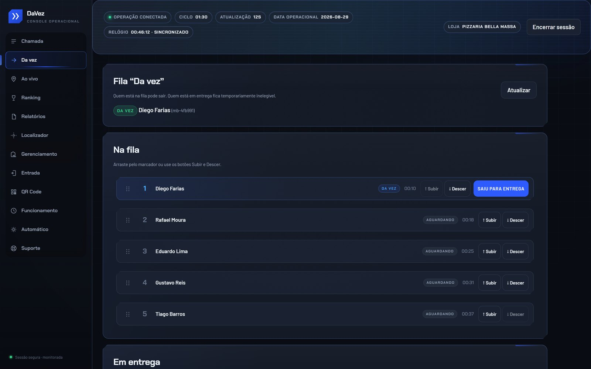
O problema
Quem tem frota própria conhece a cena: o movimento aperta, a ordem de chegada some da cabeça de todo mundo e o balcão vira tribunal. O prejuízo não é só o atrito — é o pedido parado esperando alguém decidir quem sai.
Ou num grupo de mensagem, ou na memória de quem está no balcão. Quando troca o turno, a ordem se perde junto.
Cada minuto decidindo quem sai é um minuto de comida esfriando e de cliente olhando o relógio.
Sem registro, "furaram a fila" é sempre uma possibilidade. E entregador que se sente passado para trás vai embora.
No fim do dia não sobra registro de quem saiu, quando e para onde. O que ficou combinado vira conversa difícil depois.
Como funciona
O ciclo se repete a cada corrida. Ninguém precisa avisar ninguém: a fila anda sozinha.
O entregador faz check-in pelo celular ao chegar. A posição é a hora de entrada — sem interpretação, sem lista paralela.
A fila aparece igual na tela do balcão e no celular de cada um. Quem é o próximo não é opinião de ninguém.
O balcão despacha o primeiro da fila com um toque. Ele sai da fila e passa a aparecer como quem está na rua.
Ao encerrar a entrega, ele volta para o fim da fila com horário registrado. O rodízio se mantém justo sem ninguém controlar.
Para quem é
Se os entregadores são seus — fixos ou agregados — e a ordem de saída é decidida ali no balcão, o DaVez foi feito para a sua operação.
Pizzaria, hamburgueria, comida japonesa, marmitaria: onde o pico de pedido e a fila de moto acontecem na mesma meia hora.
Farmácia, mercado, distribuidora de bebidas. Menos volume de uma vez, mas a mesma pergunta o dia todo: quem leva?
Operações que reúnem entregadores para atender vários comércios e precisam distribuir corrida com critério defensável.
Por dentro
Capturas do DaVez rodando. A loja e os entregadores das telas são fictícios — nenhum dado de cliente aparece aqui.
O painel da loja
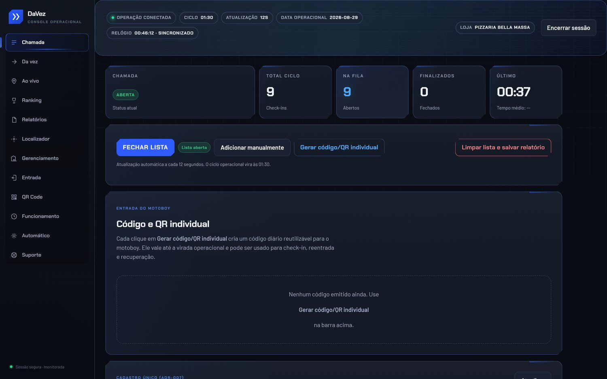
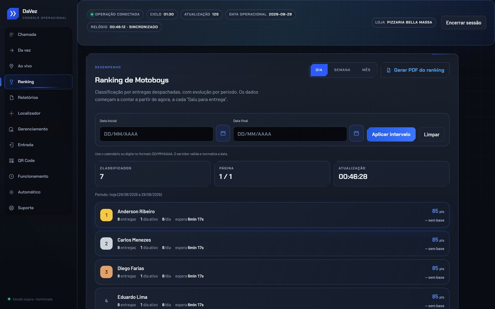
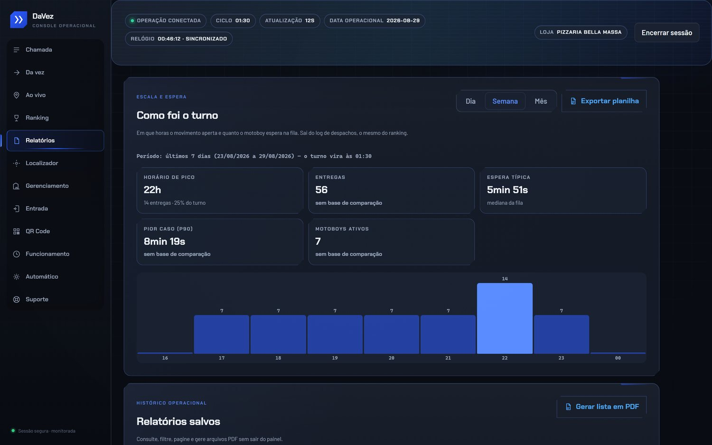
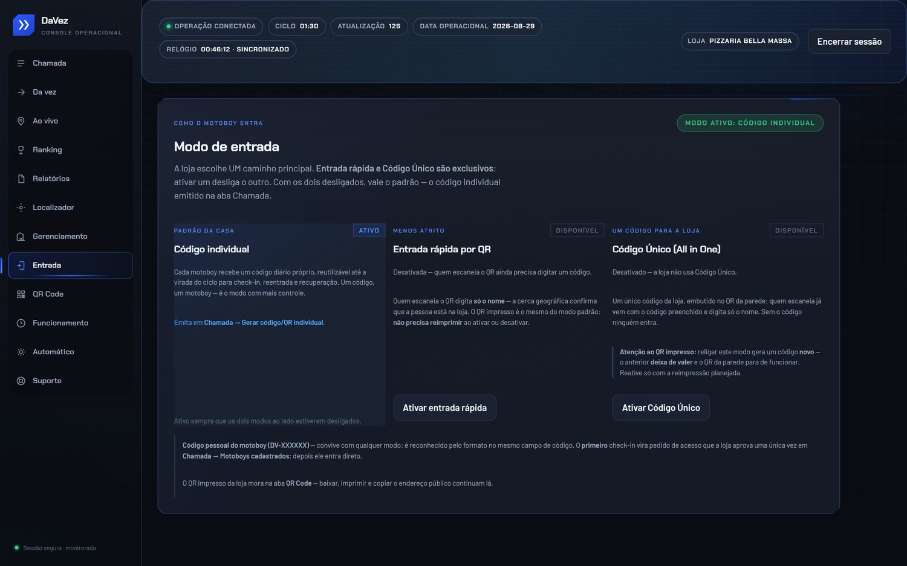
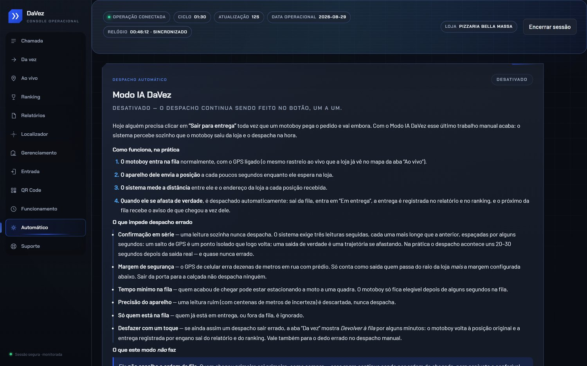
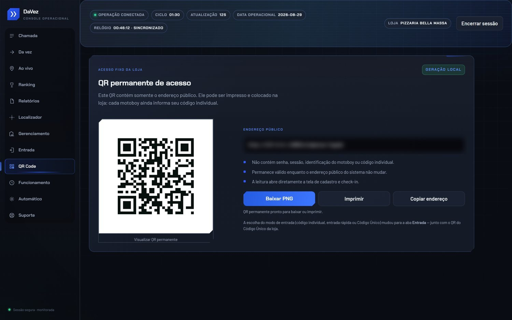
O aplicativo do entregador
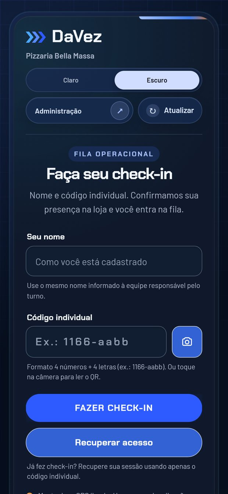
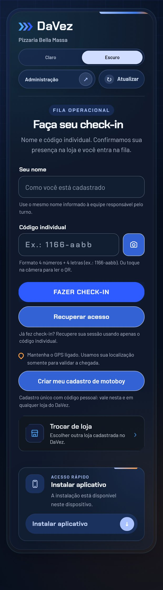
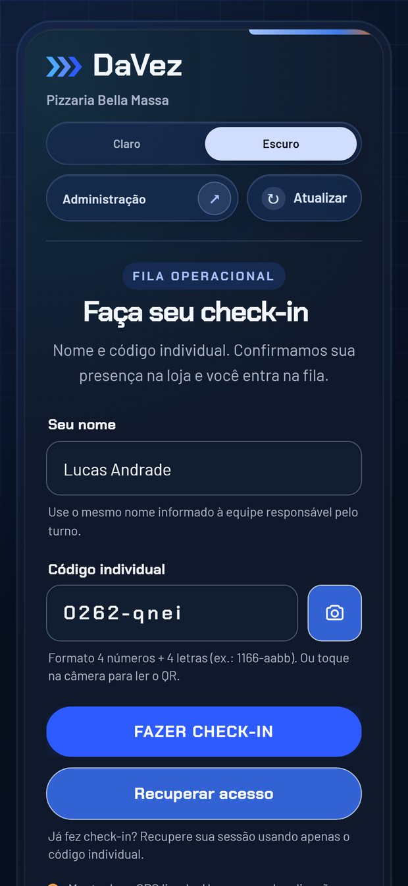
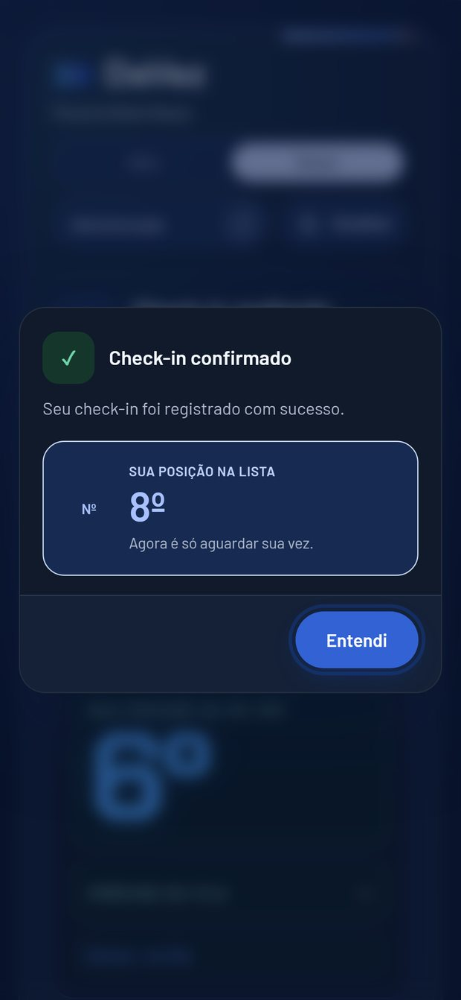
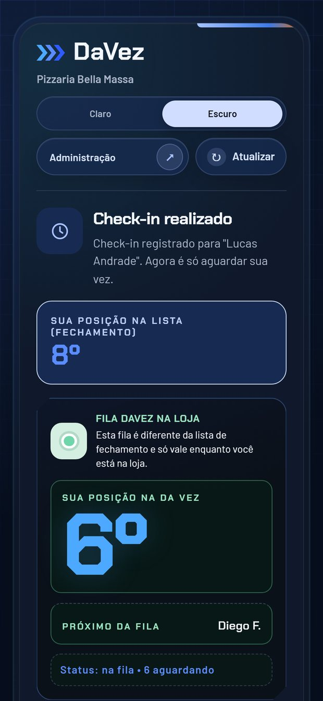
Perguntas frequentes
Ele acessa a fila pelo celular. Na demonstração a gente mostra como fica na mão dele e como fica na tela do balcão.
O balcão continua enxergando a fila inteira e pode mover ou despachar qualquer entregador. O aplicativo dele é uma conveniência, não uma dependência.
Sim. Os dois entram na mesma fila. As regras de rodízio são combinadas com você na configuração.
Não. O DaVez cuida da fila e do despacho — ele convive com o seu sistema de pedidos atual.
Sim. Cada ponto de saída tem a própria fila. Como isso fica organizado depende do seu caso, e é parte da conversa de configuração.
Próximo passo
Marque uma demonstração e a gente mostra com a sua operação na tela, do jeito que ela funciona hoje.